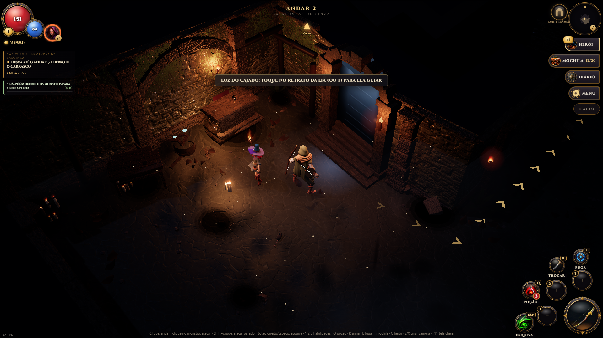
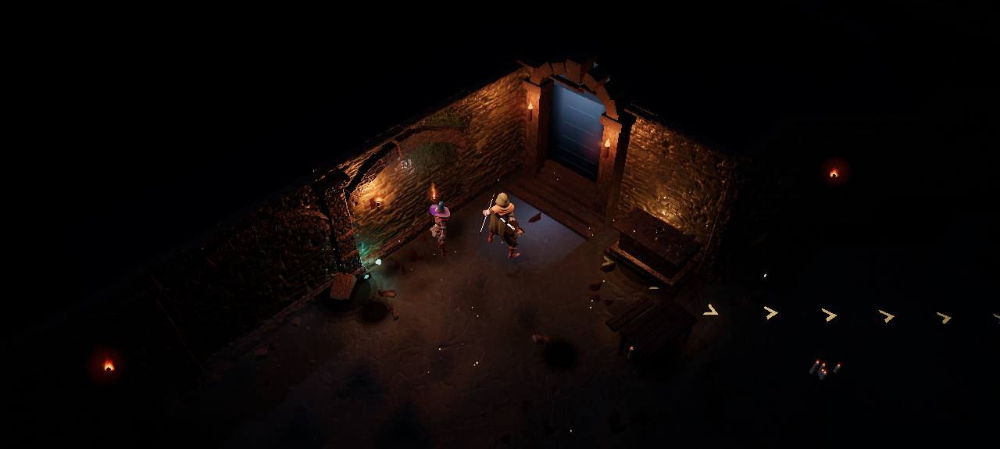
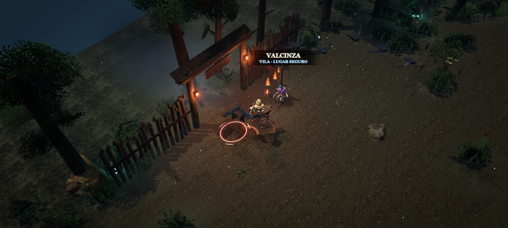

Uma rodada dedicada à luz: o breu das catacumbas continua, mas agora o que está nele se lê, e o que não deveria brilhar, não brilha mais.
Luar descendo a escada
O arco por onde se chega a cada andar era um vão azul chapado. Agora a escada que sobe mostra os degraus pegando luar, as laterais na sombra e um feixe vindo de cima, com uma poça suave de luz fria no chão diante do arco.

A passagem para a superfície parece aberta para a noite lá em cima.
Manchas que respeitam a luz
Sangue e fuligem no chão eram desenhados sem iluminação e apareciam em vermelho vivo no meio do breu. Agora recebem a mesma luz e a mesma névoa do piso: somem no escuro e surgem sob as tochas. As masmorras também ficaram um pouco menos fechadas: paredes, chão e móveis fora das tochas se leem.

Tochas, paredes e chão com leitura clara, sem perder o clima.
Corvos com volume
Corvos e morcegos vinham como metal puro, um padrão do formato dos modelos, e viravam silhuetas pretas à noite. Agora as penas e asas pegam luz. Os corvos que pousam nos campos ganharam tom carvão-azulado.

Campos de Cinza: corvos inimigos e corvos pousados com forma e brilho.